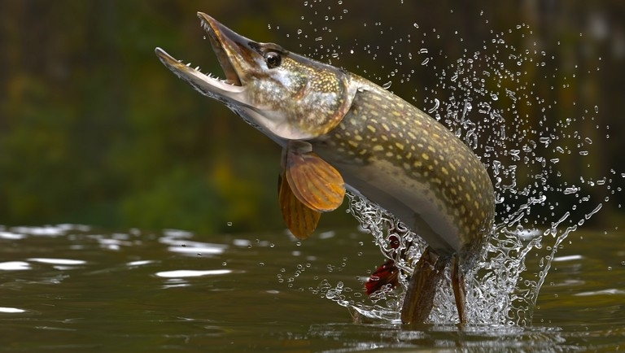

|
Nagyon
szeretek horgászni. Ezt a sportot gyerekkorom óta ûzöm, Édesapámmal,
rokonaimmal. Rendszresen horgásztunk fiatalabb koromban Pécs környékén
is, ám mára inkább a Balaton környékére korlátozódik ez a
tevékenységünk. Kedvenc horgászmódom az ún. úszózás, valamint a
pergetés. Elõbbi egy nagyon idõjárásfüggõ, ám pihentetõ tevékenység,
míg utóbbi sokkal aktívabb részvételt igényel. Sajnos még nem fogtam
ominózus méretû halakat, ám így is fogtam több, akár 4-6 kg-os halat
is. Volt szerencsém tengeri horgászathoz is(bár csak partmentihez), így
fogtam már mondhatni egzotikusabb halat is. |